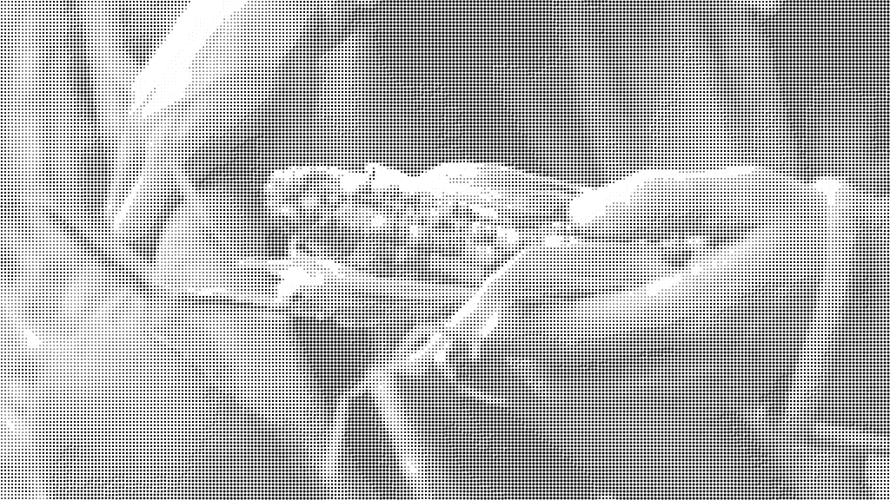

2015
Robert Eggers
The obnoxious tyranny of explanation
When I'm having trouble crystallizing my thoughts about a movie, I like to go see what the grapahic t-shirt crowd on Reddit are saying
about it. I figure people who actively post on Reddit like this are basically representative of the plurality of the movie-going bell curve inclusive of
the kind of people who behave as if movies are basically small, objective selections from parallel universes. Like picture postcards, movies seen this
way are always representative of complete, ordered worlds, with their own universal, observable, and immutible laws. Basically like our own world plus or minus stuff like magic spells, super spy technology, or Riddick. All the fun of interpretation given this understanding is in the crafting (or more often the consumption of) fan theories. Fan theories are not really interpretation as such, but a sort of desacrilized version of fanfiction, where the innate passion and desire of the writer to extend a fictional world in some new direction is replaced by the bloodless accumulation of sterile "facts" about the fictional world that can't acquire any meaning in themselves. Of course, a lot of fan theories in this vein claim interesting or insightful conclusions, but like the apologist who rejects faith in the endeavor to prove God's existence scientifically, it mistakes the terms on which it's meaning is actually realized.
I don't mean theories like the one about The Shining and the moon landing, where the theory is focused on constructing meaning from the real events of the movie's creation in order to try and understand something about the world. Rather, I mean theories that go out of their way to fundamentally ignore what a movie, a pece of art, actually is and transmogrify any sort of substance for genuine reflection into grist for the mass manufacture of fan content speculating about how many Ant-Mans can dance on the head of a pin.
As much as I'd love to do a detailed taxonomy of all the different genres of "theory" that people use to suck the life out of art (see Kafka's In the Penal Colony for an object lesson in the consequences of this kind of "interpreting," viz., obsessing over something's brilliance of design and construction in a way that blinds you to what the thing actually is, what it can do to you), I want to focus on one "theory" in particular concerning The Witch. In a thread on the r/horror board asking about what people thought of the film, user Dry_Mastodon7574 posted the following comment:
"If you look closely in the beginning, you'll see that there is a fungus on the crops. This is ergot. It's a hallucinogenic and many historians believe that people eating this fungus led to the witch panic. I love how this movie uses historical fact to tell this story. It's nearly a documentary."
God this shit just lights me up. This comment really captures the total stupid essence of what I mean when I say that this way of trying to understand movies robs them of anything worth thinking about. The power of The Witch, and the thrust of a lot of really good historical fiction, is not its ability to show us what we already know we think about those people, but rather to show us what it was like to be those people, otherwise why not just make a historical documentary? But Dry_Mastodon7574 and their ilk are not really interested in what it was like to live in 17th century Puritan America or what the human interest in portraying that life in art would even be. As if the movie is really some kind of black comedy for people clever enough to know that witches and the Devil aren't actually freaking real, as if the audience is supposed to smirk and roll their eyes along with the director, all in on the joke that these crazy, primitive Jesus freaks stupidly ate a bunch of poison that made them go crazy, and that it was really just so crazy. All the fat is gnawed out of what it means for witches and the Devil to be real when the entire phenomenon is reducible to an empirical explanation absent of meaningful social and material context.
While this kind of reaction to media is unique in its particular historical manifestation, it certainly isn't new to the post-Reformation world. Writing from the overwhelmingly Lutheran environs of 19th century Denmark, Kierkegaard wrote against attempting to approach the truth of the Bible in "objective" terms. As secularizing biblical scholarship developed in Europe after the Enlightenment, certain academic theologians began contending with scripture from a historical (i.e., linguistic, archaeological, etc.) angle. Practitioners of source criticism and other "scientific" methodologies sought to unveil the truth(s) "behind" or "underneath" scripture as supported by empirical, historical evidence.
In For Self-Examination, Kierkegaard admits that while there's certainly value in conducting this kind of research, to believe that truly meaningful, life-affecting spiritual truth can be uncovered by way empirical investigation is to confuse two different sorts of things we call "truth." He warns us against believing that truth is something static and latent, hiding beneath the linguistic and historic obscurities of the text, and that only readers who can correctly discern the "facts of the case," as it were, will be able to actually arrive at the real truth, and establish it as objectively the case. Kierkegaard believed that this kind of "scientific" hermeneutic was a way for people to become Christians "as cheaply as possible." That is, in the condition of socially reaffirmed scientific realism that Kierkegaard saw overwhelming his native northern Europe, one's Christianity has started to have less to do with the way in which one's life and values are transformed by belief than it does with one's ability to nominally abide disengaged, impersonal, and intellectual doctrines and propositions that have been robbed of their spiritual weight.
Kierkegaard stresses instead that for us to arrive at meaningful spiritual ("subjective") truth, we can't be content with lifeless knowledge of the objective facts in and surrounding the text, but attentive to our relationship with the text and what it does to us. His useful analogy is to a mirror. It would be really bizarre to ask someone looking into a mirror what they see, only for them to respond with something like "there is a rectangular construction, of such-and-such a height and such-and-such a width, which seems to be made of a combination of mostly metal and glass." This person would have entirely missed the actual use of the mirror, that is, to allow someone to see themselves from a different angle than they could without it. In this analogy, the fan-theorist is ignoring the mirror, busy on their phone trying to figure out the particular county in which the mirror was produced.
Much like the hypothetical doofus who hasn't figured out how to use a mirror, Dry_Mastodon7574 hasn't quite grasped how to use a movie like The Witch. You ask them what they thought of the movie and they attempt an explanation. They think that they are able to "solve" the movie by virtue of their keen powers of observation, as if Robert Eggers is sitting around with restless leg syndrome desperately refreshing Reddit in the hopes that some clever viewer finally picks up on the fact that the otherwise totally confusing, disconnected, and meaningless events of his film could all be explained by the Hidden Mickey he slipped into the rotten crops scene. They imagine that the screenplay is secretly color-coded based on which scenes are literally dreams and which ones are literally not. The usually not very subtle subtleties of intentional ambiguity are lost on these little scientists who think all that stuff in The Shining happened because of a gas leak in the Overlook Hotel, or that it's all one long dream Danny is having, or some other explanation that dissolves any of the questions, tensions, or ideas that led someone to make the work of art in the first place. Why bother contending with the human themes of The Godfather movies when you could develop a "theory" that the oranges in the Godfather "universe" emit a powerful pheromone that provokes Italians to violence? I make the mistake of imagining most of the people whose primary experience of media is along these lines are involved in any kind of constructive endeavor, and not just like falling asleep to YouTube videos called "The Godfather Iceberg ALL LEVELS EXPLAINED."
The important thing for Dry_Mastodon7574, the thing that makes the movie good to them, is its allegiance to historical fact: the movie is "nearly a documentary." But it just isn't. Like, it isn't at all like a documentary in almost any way. From the very beginning of the movie, it is made clear that witches are very real, not because the movie is interested in what would freaking happen if freaking witches were real, but because to the subjects of the movie, witches are real. The Puritans lived in an enchanted world where the Devil is a real guy who walks around and talks to you. But the Reddit contingent would have you believe there is little gained in trying to understand the experience of such a world in its own terms. If anything, the movie depicts an important consequence of the historical crisis between empiricism and the social church, the conditions which drove the Puritans across the Atlantic in the first place and created the psychic particulars that produced witch paranoia. But this observation is irrelevant for the fan-theorist for whom any curiosity should be expediently banished into the realm of prior judgement and dead-eyed "explanation." It is not surprising that these people tend to approach most of life the same way.
If these people had their way, every movie would include an after credits scene of the main character waking up and realizing everything was a dream. They could call it the It-Was-All-Just-A-Dream-iverse, and we could generate these after-credits scenes for every movie ever made, so that all fiction can be comfortably reconciled with a world that cannot be tolerably understood as complicated, inspriring, troubling, or even the least bit fucking interesting.